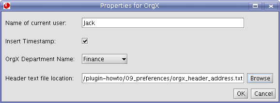
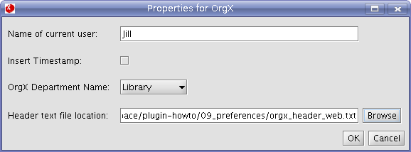

The Xena Plugin Properties mechanism provides a way to set and retrieve settings from Xena plugins, and from an application using the plugin. The Properties code is found in the au.gov.naa.digipres.xena.kernel.properties package of the xena module. Each property is backed by Java Preferences, and thus will persist across application sessions due to the use of the Windows registry, Linux temporary files etc. The properties can be set and retrieved directly using the PropertiesManager class (passing in the plugin name and property name), or using an extension of the PluginProperties class for a particular plugin (passing in the property name). PropertiesDialog can be used to automatically create a dialog (given a list of XenaProperties) containing a type-specific input for each property. This dialog will automatically load, validate and save its properties.
Property types
The PropertyType enumeration in the XenaProperty class lists the property types available. These types (and associated PropertiesDialog input type) are:
- STRING_TYPE - simple text field
- INT_TYPE - simple text field, which validates that a number has been entered
- FILE_TYPE - text field and associated Browse button which displays a File Browser
- DIR_TYPE - text field and associated Browse button which displays a Directory Browser
- SINGLE_OPTION_TYPE - drop down list from which the user may select one option
- MULTI_OPTION_TYPE - list from which the user may select many options
- BOOLEAN_TYPE - checkbox
To demonstrate Properties we will add some user-configurable settings to the Meta-Data Wrapper created in the previous chapter. The user will be able to enter their name, select their current department from a list, determine if a timestamp should be added to the metadata, and choose a file containing some header text for the meta-data.
The first step is to create a subclass of the PluginProperties class. The following code shows the abstract methods which need to be implemented:
package au.gov.naa.digipres.xena.demo.orgx;
import java.util.List;
import au.gov.naa.digipres.xena.kernel.properties.PluginProperties;
import au.gov.naa.digipres.xena.kernel.properties.XenaProperty;
public class OrgXProperties extends PluginProperties
{
@Override
public String getName()
{
return null;
}
@Override
public List<XenaProperty> getProperties()
{
return null;
}
@Override
public void initialiseProperties()
{
}
}
The getName method should simply return a unique name to identify this plugin, and the getProperties method should simply return a locally defined List of XenaProperties:
package au.gov.naa.digipres.xena.demo.orgx;
import java.util.List;
import au.gov.naa.digipres.xena.kernel.properties.PluginProperties;
import au.gov.naa.digipres.xena.kernel.properties.XenaProperty;
public class OrgXProperties extends PluginProperties
{
public static final String ORG_X_PLUGIN_NAME = "OrgX";
private List<XenaProperty> properties;
@Override
public String getName()
{
return ORG_X_PLUGIN_NAME;
}
@Override
public List<XenaProperty> getProperties()
{
return properties;
}
@Override
public void initialiseProperties()
{
}
}
So the only real work to be done in this class is in the initialiseProperties method, where each property will be defined and added to the properties list. The initialiseProperties method is automatically called by PropertiesManager directly after each PluginProperties object has been created.
First we need to specify the name of each property, and initialise the properties list.
public static final String ORG_X_HEADER_FILE_PROP_NAME = "OrgX Header File";
public static final String ORG_X_DEPARTMENT_PROP_NAME = "OrgX Department Name";
public static final String ORG_X_USER_PROP_NAME = "User Name";
public static final String ORG_X_USE_TIMESTAMP_PROP_NAME = "Insert Timestamp";
@Override
public void initialiseProperties()
{
properties = new ArrayList<XenaProperty>();
}
Now we can define each property one at a time. The basic process is:
- Create XenaProperty object
- Use the PropertyManager method loadProperty to retrieve the stored value of this property (if previoulsly used).
- Add the property to the property list.
- Property name (must be unique in a given plugin's property set, as the plugin name and property name form the key used to store the property)
- Property description (displayed on the PropertiesDialog for this property)
- Property type
- Plugin name
@Override
public void initialiseProperties()
{
properties = new ArrayList<XenaProperty>();
// User name property
XenaProperty userProperty = new XenaProperty(ORG_X_USER_PROP_NAME,
"Name of current user",
PropertyType.STRING_TYPE,
ORG_X_PLUGIN_NAME);
this.getManager().loadProperty(userProperty);
properties.add(userProperty);
// Timestamp property
XenaProperty timestampProperty = new XenaProperty(ORG_X_USE_TIMESTAMP_PROP_NAME,
"Insert Timestamp",
PropertyType.BOOLEAN_TYPE,
ORG_X_PLUGIN_NAME);
this.getManager().loadProperty(timestampProperty);
properties.add(timestampProperty);
}
The Department Name property is to be selected from a list. To implement this we set the type of the XenaProperty to SINGLE_OPTION_TYPE, and use the XenaProperty method setListOptions to set the options for this property. The setListOptions method takes a List of Objects as a parameter, and it is the toString version of each of these Objects which will be displayed in the drop down list in the PropertiesDialog. The following code should be added to the initialiseProperties method:
// Department name property
XenaProperty departmentProperty = new XenaProperty(ORG_X_DEPARTMENT_PROP_NAME,
"OrgX Department Name",
PropertyType.SINGLE_OPTION_TYPE,
ORG_X_PLUGIN_NAME);
List<Object> departmentOptions = new ArrayList<Object>();
departmentOptions.add("Finance");
departmentOptions.add("Library");
departmentOptions.add("HR");
departmentOptions.add("Consulting");
departmentOptions.add("Maintenance");
departmentOptions.add("Executive");
departmentProperty.setListOptions(departmentOptions);
this.getManager().loadProperty(departmentProperty);
properties.add(departmentProperty);
The Header File property will require a custom validation method to check that the specified file exists and is not a directory.
The base XenaProperty validate method has the following form:
public void validate(String newValue) throws InvalidPropertyException, PropertyMessageException;
The validate method should throw an InvalidPropertyException if the new value is invalid for some reason. The PropertyMessageException is used for cases where the new property value is valid, but the user still needs to be made aware of a message. The base method checks that the new value is not null, and performs basic validation on INT_TYPE and BOOLEAN_TYPE properties, ensuring that the inputs for each are numerical and boolean respectively.
So our custom validate method ensures that the new value represents an existing file. If not, an InvalidPropertyException with an appropriate method is thrown. The following code should be added to the initialiseProperties method:
// Header file property
XenaProperty headerProperty = new XenaProperty(ORG_X_HEADER_FILE_PROP_NAME,
"Header text file location",
PropertyType.FILE_TYPE,
ORG_X_PLUGIN_NAME)
{
/* (non-Javadoc)
* @see au.gov.naa.digipres.xena.kernel.properties.XenaProperty#validate(java.lang.String)
*/
@Override
public void validate(String newValue) throws InvalidPropertyException, PropertyMessageException
{
super.validate(newValue);
File headerFile = new File(newValue);
if (!headerFile.exists())
{
throw new InvalidPropertyException("Selected header file does not exist: " + headerFile);
}
if (headerFile.isDirectory())
{
throw new InvalidPropertyException("Selected header file is a directory: " + headerFile);
}
}
};
this.getManager().loadProperty(headerProperty);
properties.add(headerProperty);
Finally, we need to update the OrgXPlugin.java file so that the properties component will be loaded along with the rest of the plugin. We need to add the getPluginPropertiesList method:
@Override public ListgetPluginPropertiesList() { List propertiesList = new ArrayList (); propertiesList.add(new OrgXProperties()); return propertiesList; }
This completes the code needed to define the OrgX properties. Now we need to modify the OrgX MetaDataWrapper to use these properties. However first we need to create an implementation of the InfoProvider interface, called PropertiesInfoProvider, which will retrieve the property values. The implementation is very simple, consisting of a number of getter methods which use the PropertyManager method getPropertyValue. We pass in the OrgX plugin name, and the appropriate property name found in the OrgXProperties constants.
package au.gov.naa.digipres.xena.demo.orgx;
import java.io.File;
import au.gov.naa.digipres.xena.kernel.properties.PropertiesManager;
public class PropertiesInfoProvider implements InfoProvider
{
private PropertiesManager propManager;
public PropertiesInfoProvider(PropertiesManager propManager)
{
this.propManager = propManager;
}
public String getUserName()
{
return propManager.getPropertyValue(OrgXProperties.ORG_X_PLUGIN_NAME, OrgXProperties.ORG_X_USER_PROP_NAME);
}
public String getDepartmentCode()
{
return propManager.getPropertyValue(OrgXProperties.ORG_X_PLUGIN_NAME, OrgXProperties.ORG_X_DEPARTMENT_PROP_NAME);
}
public String getDepartmentName()
{
return propManager.getPropertyValue(OrgXProperties.ORG_X_PLUGIN_NAME, OrgXProperties.ORG_X_DEPARTMENT_PROP_NAME);
}
public boolean isInsertTimestamp()
{
return new Boolean(propManager.getPropertyValue(OrgXProperties.ORG_X_PLUGIN_NAME, OrgXProperties.ORG_X_USE_TIMESTAMP_PROP_NAME));
}
public File getHeaderFile()
{
return new File(propManager.getPropertyValue(OrgXProperties.ORG_X_PLUGIN_NAME, OrgXProperties.ORG_X_HEADER_FILE_PROP_NAME));
}
}
Now we are ready to modify OrgXMetaDataWrapper to use the new InfoProvider. First we will add two new tags, for the timestamp and the header.
public static final String ORGX_OPENING_TAG = "orgx";
public static final String ORGX_META_TAG = "meta";
public static final String ORGX_DEPARTMENT_TAG = "department";
public static final String ORGX_USER_TAG = "user_name";
public static final String ORGX_INPUT_NAME_TAG = "input_name";
public static final String ORGX_CONTENT_TAG = "record_data";
public static final String ORGX_ID_TAG = "orgx_id";
public static final String ORGX_TIMESTAMP_TAG = "timestamp";
public static final String ORGX_HEADER_TAG = "orgx_header";
Our new Properties component will be tested using the Xena application rather than a custom Java test class such as NormaliseTester. This means that we won't be able to load our InfoProvider at runtime because plugin loading and file normalisation in Xena are automated. So we will need to modify our getMyInfoProvider method so that it will create a PropertiesInfoProvider when it is first called, and just return this instance on subsequent calls.
/**
* @return Returns the myInfoProvider.
*/
public InfoProvider getMyInfoProvider() {
if (myInfoProvider == null) {
PropertiesManager propManager = this.getMetaDataWrapperManager().getPluginManager().getPropertiesManager();
myInfoProvider = new PropertiesInfoProvider(propManager);
}
return myInfoProvider;
}
A similar change will need to be made to the getMyInfoProvider method in the OrgXFileNamer class, the only difference to above is the use of the this.getFileNamerManager method rather than the this.getMetaDataWrapperManager() method.
/**
* @return Returns the myInfoProvider.
*/
public InfoProvider getMyInfoProvider() {
if (myInfoProvider == null) {
PropertiesManager propManager = this.getFileNamerManager().getPluginManager().getPropertiesManager();
myInfoProvider = new PropertiesInfoProvider(propManager);
}
return myInfoProvider;
}
All that remains to be done is to modify the startDocument method to add the new tags. The Header File and Timestamp property values need to be retrieved from the InfoProvider:
@Override
public void startDocument() throws SAXException {
String departmentName = myInfoProvider.getDepartmentName();
String userName = myInfoProvider.getUserName();
boolean insertTimestamp = myInfoProvider.isInsertTimestamp();
File headerFile = myInfoProvider.getHeaderFile();
And then the Header File and Timestamp tags need to be written out in a similar way to the other tags.
We check that the header file exists and is a valid file (this is perhaps redundant as the custom validate method written above should ensure this, but it is possible that the file may have been deleted since the property was saved). If so then the contents of this file are added to the header file tag.
If the value of the Use Timestamp property is "true", then a timestamp tag and value is written. If not, then the timestamp tag is not written at all.
// Header
try
{
if (headerFile != null && headerFile.exists() && headerFile.isFile())
{
StringBuffer headerBuffer = new StringBuffer();
BufferedReader reader = new BufferedReader(new FileReader(headerFile));
String line = reader.readLine();
while (line != null)
{
headerBuffer.append(line);
line = reader.readLine();
}
th.startElement(null, ORGX_HEADER_TAG, ORGX_HEADER_TAG, att);
th.characters(headerBuffer.toString().toCharArray(), 0, headerBuffer.length());
th.endElement(null, ORGX_HEADER_TAG, ORGX_HEADER_TAG);
}
}
catch (IOException iex)
{
throw new SAXException(iex);
}
// Timestamp
if (insertTimestamp)
{
String dateStr = new Date().toString();
th.startElement(null, ORGX_TIMESTAMP_TAG, ORGX_TIMESTAMP_TAG, att);
th.characters(dateStr.toCharArray(), 0, dateStr.length());
th.endElement(null, ORGX_TIMESTAMP_TAG, ORGX_TIMESTAMP_TAG);
}
Our one final job is to create some header files for testing. We will create two files, one that contains a postal address for OrgX, and another that contains OrgX's web address. We will create two files in the root 09_preferences directory called orgx_header_address.txt and orgx_header_web.txt. Insert the following into orgx_header_address.txt:
Normalised by OrgX, OrgX Building, 1 Smith St Canberra ACT 2600 AUSTRALIA
And insert the following into orgx_header_web.txt:
Xena Normalised by OrgX, xena@orgx.org, www.orgx.org
To test our new property-modifiable MetaDataWrapper it is best to use the Xena application. For this step we will need the xena.jar file in a specific place, it will need to be in the xena directory of the root plugin-howto directory. We will also need two plugins: the foo.jar plugin file produced in Step 6, and the XML plugin. For instructions on building Xena and the XML plugin, please refer to the Xena build guide. These plugins should be placed in the "plugins" directory in the xena directory which contains the xena.jar file.
Open a command prompt to the orgx_plugin directory (in the directory for the properties chapter). Run the command:
# ant run
This will build the orgx plugin (if it hasn't been previously built) and will run Xena Lite.
Go to the Tools->Plugin Preferences->OrgX menu. This will display a dialog containing inputs for the preferences we created in OrgXProperties above. Input the following values (you will need to browse to the correct location of the header file), and click the OK button:
Now, click the "Add Files" button and select the example_file.foo file in our data directory. Click the "Normalise" button to normalise the file. When finished, double-click on the entry in the Normaliser Results table which will display basic information about the normalised file. Now click the "Xena View" button, which will open a frame containing a representation of the normalised file. Use the drop-down list at the top-left of the frame to select the "Raw XML View". We can now see the meta data which has been added to the normalised file. The "meta" tag should look like this:
<meta> <orgx_header>Normalised by OrgX, OrgX Building, 1 Smith St Canberra ACT 2600 AUSTRALIA</orgx_header> <timestamp>Mon May 01 13:27:17 EST 2006</timestamp> <department>Finance</department> <user_name>Jack</user_name> <input_name>file:/simple.txt</input_name> <orgx_id>file:/simple.txt_Finance_Jack_</orgx_id> </meta>
Close the XenaViewer and Normaliser Results windows, and click the "New Session" button. We will now change the values of the properties in the same manner as above, except this time set them to the following values:
Normalise the same file again and bring up the Raw XML View of the normalised file using the method described above. The "meta" tag should now look like this:
<meta> <orgx_header>Xena Normalised by OrgX, xena@orgx.org, www.orgx.org</orgx_header> <department>Library</department> <user_name>Jill</user_name> <input_name>file:/simple.txt</input_name> <orgx_id>file:/simple.txt_Library_Jill_</orgx_id> </meta>